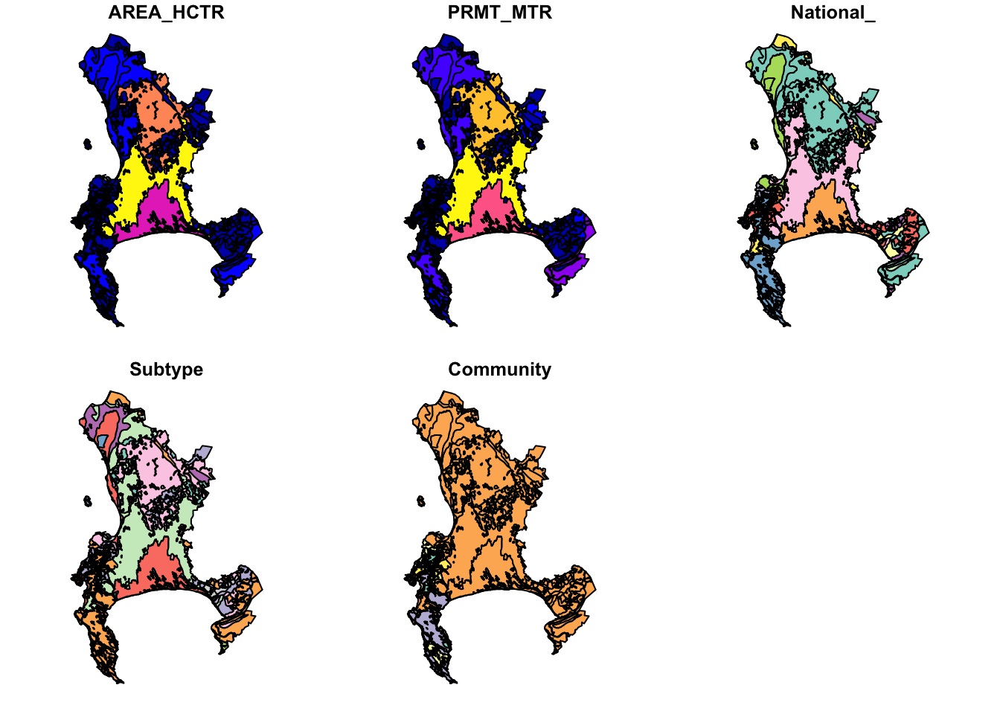
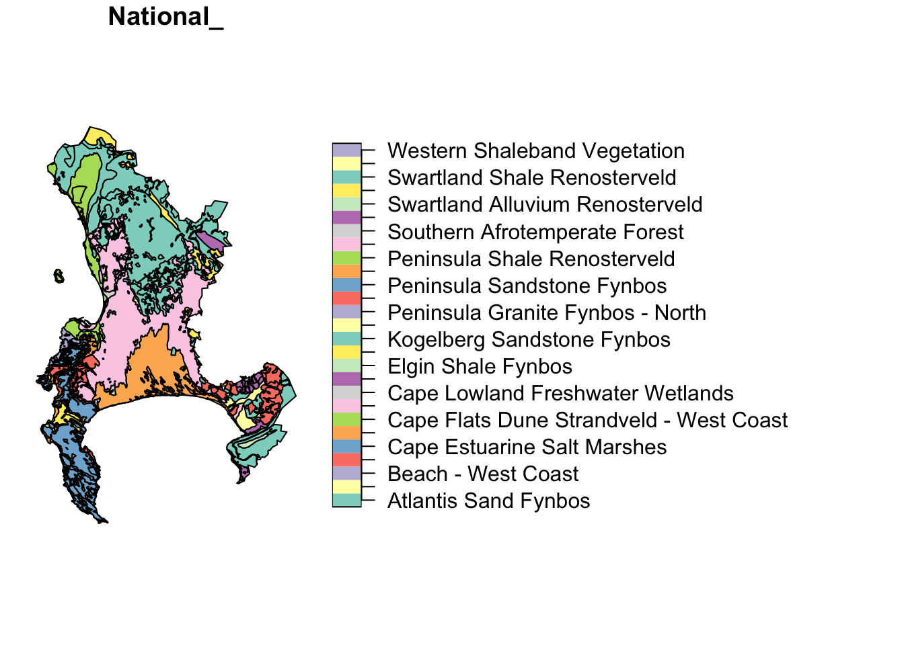

7 GIS operations in R
7.1 Case study and demo datasets
Ok, for demonstrating some of the many GIS operations R can perform we will be using data from one of my favourite study areas, the Cape Peninsula.
The datasets we will use, some of their properties and where to source them are tabled below:
| Name | Data.model | Geometry.type | File.format | Data.source | URL |
|---|---|---|---|---|---|
| Localities | Vector | Point | iNaturalist | https://www.inaturalist.org/ | |
| Watercourses | Vector | Line | ESRI shapefile | City of Cape Town | https://odp-cctegis.opendata.arcgis.com/datasets/open-watercourse |
| Vegetation Types | Vector | Polygon | ESRI shapefile | City of Cape Town | https://odp-cctegis.opendata.arcgis.com/datasets/indigenous-vegetation-current-extent |
| Elevation | Raster | Raster | GeoTIFF | City of Cape Town | https://odp-cctegis.opendata.arcgis.com/datasets/digital-elevation-model-10m-grid-general-binary-ascii |
If you’d like to follow along and run the analyses that follow, please follow the links and download the datasets. Please note that the elevation dataset is ~130MB. I’ll also put a copy of all datasets on the Vula site for the course, which I understand is zero-data rated.
7.2 Working with vector data
7.2.1 Reading and writing
sf has a one-size-fits-all approach in that most functions can be applied to most different data types (point, line, polygon, etc) or, in the case of reading and writing, file formats. To read data the function you want is st_read().
You’ll note that most of the sf functions begin with “st_” - this stands for “spatial and temporal” and is the same in some other GIS like PostGIS.
Let’s try to read in some dat with st_read():
Note that if you’re trying any of the read/write code at home, you’ll need to set the file path to where you put the data and want the outputs on your local machine. You can also use
?setwdto simplify this.
library(sf)
veg <- st_read("data/cape_peninsula/veg/Vegetation_Indigenous.shp")## Reading layer `Vegetation_Indigenous' from data source `/home/jasper/GIT/spatial-r/data/cape_peninsula/veg/Vegetation_Indigenous.shp' using driver `ESRI Shapefile'
## Simple feature collection with 1325 features and 5 fields
## Geometry type: POLYGON
## Dimension: XY
## Bounding box: xmin: -63972.95 ymin: -3803535 xmax: 430.8125 ymax: -3705149
## proj4string: +proj=tmerc +lat_0=0 +lon_0=19 +k=1 +x_0=0 +y_0=0 +ellps=WGS84 +units=m +no_defsThis has successfully read in the data and given us a summary of some of its properties. Note the projection (proj4string). This is Transverse Mercator Lo19 (i.e. centred on the 19 degree line of longitude), which has a unit in metres (see the bounding box coordinates). It’s a good projection for most calculations at this scale (and on this line of longitude*).
*If you’re using Transverse Mercator, always make sure it is set for your closest “odd” line of longitude (i.e. Lo19, Lo21, Lo23)!
Let’s have a closer look at the data:
class(veg)## [1] "sf" "data.frame"It is an object of two different “classes,” a data.frame, which is an R object class you should be familiar with, and class sf, which is the native class for the sf library.
The nice thing about being both classes is it means you can apply the functions built for either class, e.g.
head(veg)## Simple feature collection with 6 features and 5 fields
## Geometry type: POLYGON
## Dimension: XY
## Bounding box: xmin: -51324.95 ymin: -3732075 xmax: -35653.98 ymax: -3718136
## proj4string: +proj=tmerc +lat_0=0 +lon_0=19 +k=1 +x_0=0 +y_0=0 +ellps=WGS84 +units=m +no_defs
## AREA_HCTR PRMT_MTR National_
## 1 1807.5183616 24763.8073 Atlantis Sand Fynbos
## 2 2.1437754 609.5892 Atlantis Sand Fynbos
## 3 0.2134855 185.5566 Atlantis Sand Fynbos
## 4 2.8602421 652.1671 Atlantis Sand Fynbos
## 5 0.5468058 336.8006 Atlantis Sand Fynbos
## 6 0.4172046 259.7772 Atlantis Sand Fynbos
## Subtype Community
## 1 on marine-derived acid sands Need to Find Out
## 2 on marine-derived acid sands Need to Find Out
## 3 on marine-derived acid sands Need to Find Out
## 4 on marine-derived acid sands Need to Find Out
## 5 on marine-derived acid sands Need to Find Out
## 6 on marine-derived acid sands Need to Find Out
## geometry
## 1 POLYGON ((-48203.88 -372294...
## 2 POLYGON ((-36676.72 -371974...
## 3 POLYGON ((-35891.46 -371837...
## 4 POLYGON ((-35750.07 -371847...
## 5 POLYGON ((-35823.89 -371817...
## 6 POLYGON ((-35929.18 -371824...This is a commonly used function for looking at the first few rows of a dataframe. Note there are 5 attribute columns and a 6th geometry column. All sf objects have a geometry column. This is where it stores the geometry - i.e. the point, line, polygon etc - associated with each row of attribute data.
To write data with sf you use st_write(), like so:
st_write(veg, "data/cape_peninsula/veg/Vegetation_Indigenous_duplicate.shp")## Writing layer `Vegetation_Indigenous_duplicate' to data source `data/cape_peninsula/veg/Vegetation_Indigenous_duplicate.shp' using driver `ESRI Shapefile'
## Writing 1325 features with 5 fields and geometry type Polygon.file.exists("data/cape_peninsula/veg/Vegetation_Indigenous_duplicate.shp") # Just to confirm for you that the file exists## [1] TRUENote that the function recognised that I wanted to write out an ESRI shapefile from the .shp file extension I provided. You can set the file type using the driver = setting in st_write(). Try st_drivers() for the list of file types supported.
7.2.2 Basic plotting
As with other data types in R (and perhaps even more so with spatial data), you can really go to town with plotting. I’m only going to show you enough to be able to interrogate your data. Making it look pretty is a week-long course or more in its own right. Check out the “Making maps with R” chapter in Lovelace et al’s online book Geocomputation with R for a good start.
The easiest way to plot datasets in R is often a bad thing to do when working with spatial datasets!
plot(veg)
Fortunately, in this case the dataset isn’t too big, but often you’ll either be overwhelmed with plots or your computer will crash…
Why 5 plots and not one? This is because sf wants to plot the properties of each attribute in the attribute table. Fortunately, there were only 5, but there could have been hundreds! You can select the one you want with indexing like so:
plot(veg[3])
These are the National Vegetation Types for the City of Cape Town municipality.
You’ll note that we’re using the base R graphics functions. I mentioned before that sf integrates well with the Tidyverse, so this could also be plotted like so:
library(tidyverse) #calls ggplot2 and other Tidyverse packages together
ggplot() +
geom_sf(data=veg, aes(fill = `National_`))
That’s better for the legend, but now we’ve squashed the map. Let’s narrow in on the Cape Peninsula for convenience.
7.2.3 Cropping
Here we’ll apply the function st_crop. To use the function you need an object to crop, and an extent or bounding box to crop to. sf is clever, and you can set the extent by giving it another object who’s extent you’d like to match (check the bounding box given when we read in the data earlier).
We don’t have a second object in this case, so we have to provide a “numeric vector with named elements xmin, ymin, xmax and ymax,” like so:
ext <- c(-66642.18, -3809853.29, -44412.18, -3750723.29) #Coordinates in metres according to TM Lo19
ext## [1] -66642.18 -3809853.29 -44412.18 -3750723.29names(ext) <- c("xmin", "ymin", "xmax", "ymax") #Give it names
ext## xmin ymin xmax ymax
## -66642.18 -3809853.29 -44412.18 -3750723.29Now we can feed that into st_crop
veg <- st_crop(veg, ext) #Note that I'm overwriting the old data object## Warning: attribute variables are assumed to be spatially constant
## throughout all geometriesggplot() + geom_sf(data=veg, aes(fill = `National_`))
Better?
But what about the silly splits like Peninsula Granite Fynbos - North/South and Cape Flats Dune Strandveld - West Coast/False Bay.
Which ones do I mean?
7.2.4 Select and subset by attribute
Let’s select them from the attribute table and plot them.
#Get a list of the veg types we want
split_veg <- c("Peninsula Granite Fynbos - North",
"Peninsula Granite Fynbos - South",
"Cape Flats Dune Strandveld - West Coast",
"Cape Flats Dune Strandveld - False Bay")
#Use base R indexing to select attributes
vegsub <- veg[which(veg$National_ %in% split_veg),]
#Plot
ggplot() + geom_sf(data=vegsub, aes(fill = `National_`))
Or tidyverse…
#Using tidyverse piping to filter and plot
veg %>%
filter(National_ %in% split_veg) %>%
ggplot() +
geom_sf(aes(fill = `National_`))
Ok. What if we decided we don’t want them split?
7.2.5 Combine classes and dissolve by attribute
We can just rename them in appropriate column in the attribute table…
vegsub$National_ <- str_replace_all(vegsub$National_, c("Peninsula Granite Fynbos - North" = "Peninsula Granite Fynbos",
"Peninsula Granite Fynbos - South" = "Peninsula Granite Fynbos",
"Cape Flats Dune Strandveld - West Coast" = "Cape Flats Dune Strandveld",
"Cape Flats Dune Strandveld - False Bay" = "Cape Flats Dune Strandveld"))
ggplot() + geom_sf(data=vegsub, aes(fill = `National_`))
But from the polygon boundaries we see that there are a number of adjacent polygons (i.e. they have shared boundaries) that are of the same veg type. We can “dissolve” these boundaries like so:
vs_dissolve <- vegsub %>% group_by(National_) %>% summarize()
#plot dissolved
ggplot() + geom_sf(data=vs_dissolve, aes(fill = National_))
Ok… I think we’ve flogged that horse as far as it’ll go for now. Let’s bring in another dataset. How about points?
7.2.6 Calling iNaturalist data from R
A very cool feature of iNaturalist is that the team at rOpenSci have built a great R package for interfacing with it directly, called rinat!
Let’s get all the records we can for the King Protea (Protea cynaroides).
library(rinat)
#Call the data directly from iNat
pc <- get_inat_obs(taxon_name = "Protea cynaroides",
bounds = c(-34.5, 18, -33.5, 18.5),
maxresults = 1000)
#Filter returned observations by a range of attribute criteria
pc <- pc %>% filter(positional_accuracy<46 &
latitude<0 &
!is.na(latitude) &
captive_cultivated == "false" &
quality_grade == "research")
#Make the dataframe a spatial object of class = "sf"
pc <- st_as_sf(pc, coords = c("longitude", "latitude"), crs = 4326) #Note that I had to define the CRS!!!
#Plot
ggplot() + geom_sf(data=pc)
Great! We got lots of points, but without a base layer its very difficult to tell where exactly these are?
7.2.7 Adding basemaps to plots
Let’s pull up a base layer from Open Street Maps and plot our points on that.
library(rosm)
library(ggspatial)
ggplot() +
annotation_map_tile(type = "osm", progress = "none") +
geom_sf(data=pc)
Note that there are quite a few base layer options that can be set with type = "". Try rosm::osm.types() to see them all.
This is better than nothing, but the scale of the map is too small to really see where the plants actually are. It would be much easier if we could look at the data interactively?
7.2.8 Interactive maps with leaflet
We can generate interactive maps by calling the leaflet mapserver using wrapper functions in the leaflet R package written for this purpose.
library(leaflet)
library(htmltools)
leaflet() %>%
addTiles(group = "Default") %>% # Add default OpenStreetMap map tiles
# addPolygons(data=layer, color = "#999999", weight = 1, smoothFactor = 0.5, opacity = 0.75, fillOpacity = 0.15, highlightOptions = highlightOptions(color = "white", weight = 2, bringToFront = F), label=~layer$QUARTERN, group = "Quaternaries") %>%
addCircleMarkers(data = pc,
group = "Protea cynaroides",
radius = 3,
color = "green") Much better!
Strange, but even though we filtered our iNaturalist records for captive_cultivated == "false" we still have a number of observations that appear to be in people’s gardens. Let this serve as a warning to be wary of all data! Always do “common-sense-checks” on your data and the outputs of your analyses!!!
7.2.9 Intersecting points and polygons
One way to drastically reduce the number of cultivated records is to overlay the localities (points) with the remaining extent of the vegetation types.
vegr <- st_read("data/cape_peninsula/veg/Vegetation_Indigenous_Remnants.shp")## Reading layer `Vegetation_Indigenous_Remnants' from data source `/home/jasper/GIT/spatial-r/data/cape_peninsula/veg/Vegetation_Indigenous_Remnants.shp' using driver `ESRI Shapefile'
## Simple feature collection with 3428 features and 7 fields
## Geometry type: POLYGON
## Dimension: XY
## Bounding box: xmin: -63951.23 ymin: -3803532 xmax: 420.7595 ymax: -3705506
## proj4string: +proj=tmerc +lat_0=0 +lon_0=19 +k=1 +x_0=0 +y_0=0 +ellps=WGS84 +units=m +no_defs#st_join
#st_intersects
#st_intersection